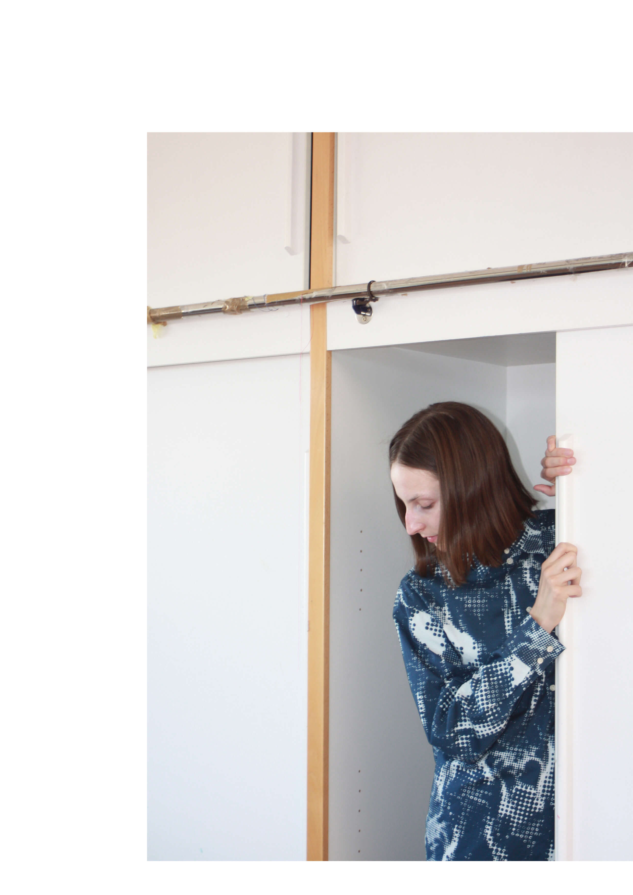
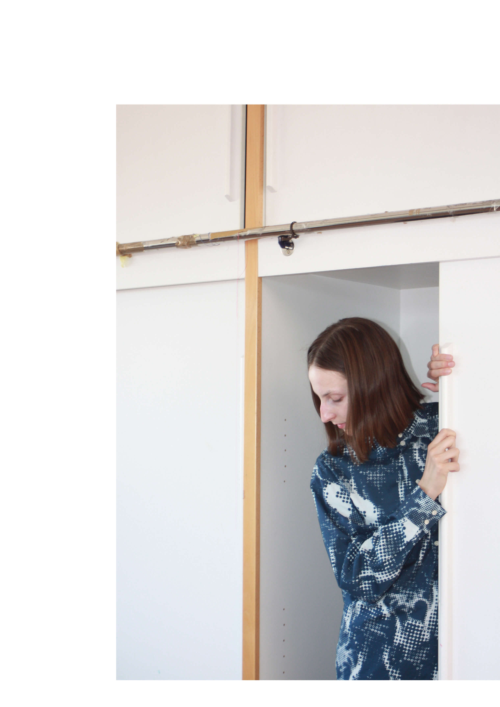

Večdimenzionalnost tekstilnih vzorcev
 


Avtorica: Sara Šmid / Mentorica: prof. Marija Jenko / Somentorica: doc. dr. Tanja Nuša Kočevar / 2022
Multidimensionality of Textile Patterns / Author: Sara Šmid / Mentor: Prof. Marija Jenko / Co-mentor: Asst. Prof. Tanja Nuša Kočevar / 2022
Večdimenzionalnost tekstilnih vzorcev je nastala po predhodnem preučevanju sistemov teseliranih vzorcev Mauritsa Cornelisa Escherja, vsebinsko pa se nanaša na delo in miselnost slovenskega arhitekta Ivana Vurnika ter stare slovenske pregovore. S tem delo obuja in ohranja slovensko kulturno, arhitekturno in tekstilno dediščino. Rezultat raziskovanja je serija vzorcev, grafik in tekstilnih slik, ki imajo eksperimentalni značaj in so nastale z uporabo raznolikih tekstilnih tehnik, od digitalne, sitotiska in vezenine do žakarja.
The multidimensionality of the textile patterns was created after a preliminary study of Maurits Cornelis Escher’s tessellation patterns. At the same time, the content refers to the legacy, work and vision of the Slovenian architect Ivan Vurnik and old Slovenian proverbs. In doing so, the work revives and preserves Slovenian cultural, architectural and textile heritage. The research results in a series of patterns, graphics and textile images that have an experimental character and were created using various textile techniques, from digital, screen printing and embroidery to jacquard.

Tekom projekta sta nastali dve večji skupini del. V prvi skupini so tekstilni vzorci ustvarjeni z uporabo dveh odtenkov modre barve, s poudarkom na raziskovanju njunega medsebojnega odnosa in vpliva na izbran vzorec. V drugi skupini pa so dela ustvarjena v monokromatskem prostoru s poudarkom na reliefnosti in subtilnosti vzorca. Obema je skupno razmišljanje o večdimenzionalnosti tekstilnih vzorcev ter raziskovanje likovnih kakovosti rastra, reproduktivnega grafičnega sredstva.
Throughout the project, two major groups of works were created. In the first group, textile patterns were created using two shades of blue, with an emphasis on exploring their interrelationship and influence on the selected pattern. In the second group, works were made in a monochromatic space, focusing on the relief and subtlety of the pattern. Both groups consider the multidimensionality of textile patterns and the exploration of the visual qualities of the halftone, a reprographic technique.

Pri ustvarjanju vzorcev so bili snovani tudi sekundarni vzorci, kot je t. i. 'moare' efekt, ki predstavlja zanimiv likovni pojav, vzorcem pa doda občutek nostalgije. Raziskovanje sekundarnih vzorcev je bilo ustvarjeno tudi s prekrivanjem dveh rasternih mrež, plastenjem vzorcev na prosojnih materialih ter tiskanjem na reliefne materiale.
During the design process, secondary patterns were also designed, such as the moiré pattern, which represents an intriguing visual phenomenon and adds a sense of nostalgia to the patterns. Exploring secondary patterns was also created by overlapping two halftones, superposing transparent layers containing opaque patterns and printing on embossed materials.
Vsem delom je skupna misel, da je lahko vzorec veliko več kot dekoracija – je način, da zapolnimo izbrano površino. Vzorci nosijo skrbno in subtilno oblikovane simbole in pomene, ki lahko posamezniku ali družbi dajejo večji pomen in vrednost. Serija vzorcev, grafik in tekstilnih slik je bila predstavljena v sklopu Vurnikovih dnevov, na razstavi v Šivčevi hiši v Radovljici.
The common thread running through all the works is that a pattern can be much more than a decoration – it is a way to fill the selected surface. Patterns carry carefully and subtly designed symbols and meanings that can give individuals or society greater significance and value. Patterns, graphics and textile images were presented as part of the Vurnik Days at the exhibition in the Šivec House in Radovljica.